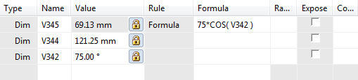
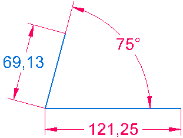

Create a Variable Using a Function or Subroutine
-
Choose Tools tab→Variables group→Variables .
-
In the Variable Table, in the Unit Type list, select the unit type. This is the unit type for the variables value. The default type is Distance.
Note:To store a value without units, select Scalar from the list.
-
In the Name column, click an empty cell.
-
Type a name for the variable that you want to create. Press Enter.
-
In the same row, in the Formula column, click a cell.
-
Click the Function Wizard button.
-
Click the function that you want in the Function Wizard dialog box.
-
Enter the appropriate values in the dialog box. The Function Wizard dialog box displays the available functions and appropriate input. For example, if the variables Var1 and Var2 already exist, some valid formulas using functions are as follows:
Sqr(Var1) * Sin(Var2)
Sqr( Var1^2 + Var2^2 )


-
You can write external functions and subroutines in VBScript and use them as variable formulas. You can write these functions in Visual Basic, or any text editor, and save them in a .BAS file. The Function Wizard steps you through the process of selecting the module file, the specific function or subroutine, and the necessary input and output.
-
If you type a function and you cannot remember the argument list, press CTRL+A after you have typed the equal sign, function name, and opening parenthesis. This activates the Function Wizard with the function already selected for you.
-
You can also enter expressions with functions directly in the cell in the Formula column.
How do I
Example: Creating relationships between dimensions of several profilesDefine limits for a variable
Edit an existing variable
Create a variable with a link to a spreadsheet
Create a Variable with a value or expression
Display dimensions in the Variable Table
Expose a variable
Extract Variable Table data using property text
Example: Linking variables to a spreadsheet
Suppress a feature using the Variable Table
Format a Column
Edit a formula
Edit a Formula Containing a Function
Insert a function into a formula
Edit an existing variable for a part within an assembly
Link variables between parts in an assembly
Learn more
Using variablesLook up more details
Variables commandVariable Table dialog box
Filter dialog box
Variable Rule Editor dialog box
Add Suppression Variable command
Edit Formula command
Edit Formula command bar
Peer Variables command
Peer Variables command bar
Function Wizard Step 1 of 2 dialog box
Function Wizard Step 2 of 2 dialog box
Alphabetical List of Functions
Show All Formulas Command
Show All Names Command
Show All Values Command
Copy Link command
Clear Contents command
Filter Command
Paste Link Command
Open Source command